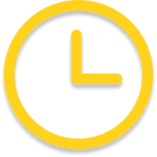

Kontakt
O nama
Vaši zubi
u pravim rukama
  Što radimo?
Fiksna protetika
Otkrijte bit restorativne stomatologije s našim zubnim krunicama i mostovima izrađenim po mjeri. Naše zubne krunice daju čvrstoću i estetsko poboljšanje oštećenim zubima, dok naši mostovi stručno nadomještaju nedostajuće zube sigurnim učvršćivanjem na susjedne zdrave zube ili zubne implantate. Izrađene od visokokvalitetnih materijala poput porculana i metalnih legura, naše protetike nude izdržljivost i prirodnu estetiku.
Mobilna protetika
Mobilne proteze cjelovito su rješenje za one koji nemaju prirodne zube. Izrađene s preciznošću i korištenjem visokokvalitetnih materijala, nude prirodan izgled i udobno pristajanje. Naš laboratorij daje prioritet preciznim mjerenjima i otiscima, osiguravajući savršeno pristajanje za vašu mobilnu zubnu protetiku. Računajte na nas da ćemo vam vratiti osmijeh i samopouzdanje, poboljšati ukupnu kvalitetu života.
Implantologija
Specijalizirani smo za rješenja za zubne implantate, nudeći vrhunski pristup nadomještanju zuba. Zubni implantati zlatni su standard za obnavljanje zuba koji nedostaju, osiguravajući trajno rješenje prirodnog izgleda. Naš tim koristi naprednu tehnologiju i tehnike kako bi osigurao precizno postavljanje i optimalnu estetiku. Povjerite nam se za vrhunska rješenja za zubne implantate jer nam je vaše oralno zdravlje i dobrobit prioritet.
Kombinirani radovi
Ponosni smo na ponudu širokog spektra kombiniranih stomatoloških usluga za rješavanje svih vaših potreba za oralnim zdravljem na jednom mjestu. Bez obzira trebate li fiksnu protetiku, mobilnu zubnu protetiku, zubne implantate ili kombinaciju ovoga, mi vam možemo pomoći. Preciznim mjerenjima, preciznim otiscima i korištenjem visokokvalitetnih materijala, osiguravamo savršeno pristajanje, trajnost i prirodnu estetiku.
|
Josipa Topleka 16, Šenkovec 40 000 Čakovec Hrvatska |
|
|
dental-craft.hr info@dental-craft.hr +385 99 336 8253 |
|
|  |
Radno vrijeme: Ponedjeljak - Petak 7:00 - 15:00 |